전자계산기기능사 (2004-02-01 기출문제)
1과목: 전기전자공학
1. 서로 같은 저항 n개를 병렬로 연결했을 때의 합성저항을 1개의 저항값과 비교 했을 때의 관계는?
- 1/n
- 1/n2
- n＋1
- n-1
(정답률: 62%)

2. RLC공진회로에 대한 설명이다. 틀린 것은?
- 직렬공진 시 임피던스는 최소로 된다.
- 직렬공진 시 전류는 최소가 된다.
- 병렬공진 시 임피던스는 최대로 된다.
- 병렬공진 시 전류는 최소가 된다.
(정답률: 48%)
3. 저역통과 RC회로에서 시정수가 의미하는 것은?
- 응답의 상승속도를 표시한다.
- 응답의 위치를 결정해 준다.
- 입력의 진폭크기를 표시한다.
- 입력의 주기를 결정해 준다.
(정답률: 35%)
4. 그림과 같은 2단궤환 증폭회로에서 궤환전압 Vf는?
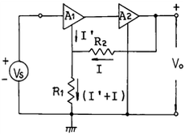
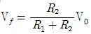
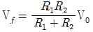
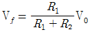
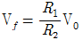
(정답률: 39%)
5. FM(주파수 변조)에서 신호주파수가 1KHz, 최대주파수 편이가 4KHz일 경우 변조지수는?
- 0.25
- 0.4
- 4
- 10
(정답률: 51%)
6. 그림과 같은 회로의 출력에 나타나는 파형은?
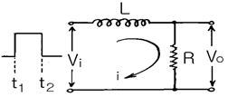
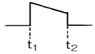
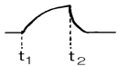
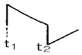
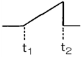
(정답률: 57%)
7. 그림에서 펄스의 반복주기는?
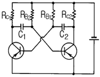
- 0.7(C2RB1＋C1RB2)
- 0.7(C1RB1＋C2RB2)
- C2RB1＋C1RB2
- C1RB1＋C2RB2
(정답률: 33%)
8. 그림과 같은 이상적인 발진기에서 발진주파수를 결정하는 소자는?
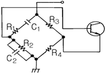
- R3, R4, C1, C2
- C1, C2, R1, R2
- C1, R1, R2, R3
- C1, R1
(정답률: 58%)
9. 그림의 리플함유율은 몇 %인가?
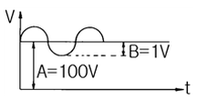
- 1
- 2
- 10
- 20
(정답률: 27%)
10. 저항 R=5Ω, 인덕턴스 L=100mH, 정전용량 C=100㎌의 RLC 직렬회로에 60Hz의 교류전압을 가할 때 회로의 리액턴스 성분은?
- 유도성
- 용량성
- 저항
- 임피던스
(정답률: 47%)
2과목: 전자계산기구조
11. 다음 논리식을 간소화 하면?
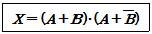
- A
- AB
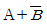
- B
(정답률: 60%)
12. 프로그램은 일의 처리 순서를 나타낸 명령의 집합이다. 각 명령의 구성은?
- 명령 코드(op-code)와 오퍼랜드(Operand)
- 오퍼랜드(Operand)와 제어 프로그램
- 오퍼랜드(Operand)와 목적 프로그램
- 명령 코드와 실행 프로그램
(정답률: 61%)
13. 에러검출뿐만 아니라 교정까지 가능한 코드는?
- Biquinary Code
- Gray Code
- ASCII Code
- Hamming Code
(정답률: 91%)
14. 다음 코드 가운데 데이터 통신용으로 널리 사용되며, 또한 소형 컴퓨터에서 많이 채택하고 있는 것은?
- ASCII
- BCD
- EBCDIC
- Hamming
(정답률: 74%)
15. 다음 도면의 연산기에서 AND 동작을 취하면 결과는?
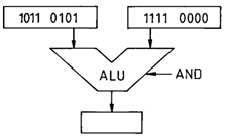
- 1101 0000
- 1011 0000
- 1110 0000
- 0100 1010
(정답률: 80%)
16. CPU는 처리속도가 빠르고 주변 장치는 처리 속도가 늦기 때문에 CPU를 효율적으로 사용하기 위한 방안으로 주변 장치에서 요청이 있을 때만 취급을 하고 그 외에는 CPU가 다른 일을 하는 방식은?
- interrupt
- isolated I/O
- parallel processing
- DMA
(정답률: 49%)
17. 다음 장치 중 입력 장치가 될 수 없는 것은?
- 카드 판독기(card reader)
- 프린터(printer)
- 자기 테이프
- console
(정답률: 68%)
18. 근거리 또는 동일 건물 내에서 다수의 컴퓨터를 통신 회선을 이용하여 연결하고, 데이터를 공유하게 함으로써 종합적인 정보처리 능력을 갖게 하는 통신망은?
- WAN
- VAN
- LAN
- DAN
(정답률: 82%)
19. 다음 2변수 카르노도로부터 논리식이 옳은 것은?
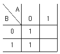
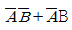
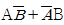
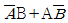
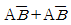
(정답률: 47%)
20. 2진수 (1100)2의 2의 보수는?
- 0100
- 1100
- 0101
- 1001
(정답률: 73%)
21. 중앙처리장치를 크게 두 부분으로 나눌 때 중앙처리장치를 구성하는 요소로만 되어 있는 것은?
- 기억장치, 연산장치
- 연산장치, 제어장치
- 기억장치, 제어장치
- 입·출력장치, 제어장치
(정답률: 60%)
22. 어떤 명령어를 반복적으로 처리하기 위하여 연속되지 않은 주소에 있는 명령어로 제어의 흐름을 바꾸도록 하는 명령어를 무엇이라 하는가?
- 명령어 처리 순서
- 명령어 해석
- 명령어 수행
- 분기 명령
(정답률: 37%)
23. 다음 특수 기억장치와 기능이 올바르게 짝지어진 것은?
- 가상기억장치 - 처리속도 증가
- 캐시 기억장치 - 처리속도 증가
- 복수모듈 기억장치 - 메모리 확장
- 연상 기억장치 - 메모리 확장
(정답률: 68%)
24. 사칙연산, 논리연산 등의 중간 결과를 기억하는 기능을 가지고 있는 연산장치의 중심 레지스터는?
- 누산기(accumulator)
- 데이터 레지스터(data register)
- 가산기(adder)
- 상태 레지스터(status register)
(정답률: 72%)
25. 번지 필드가 없는 명령어로서 스택(stack) 운영에 의해 이루어지는 명령어 형식은?
- 0 - 주소 형식
- 1 - 주소 형식
- 2 - 주소 형식
- 3 - 주소 형식
(정답률: 78%)
26. 컴퓨터의 5대 장치에 포함되지 않는 것은?
- 주변 장치
- 연산 장치
- 제어 장치
- 입·출력장치
(정답률: 69%)
27. EPROM에 기억된 내용을 지우는 방법은?
- 자외선
- 적외선
- 방사선
- 고주파
(정답률: 51%)
28. 양쪽 방향에서 동시에 정보를 송·수신 할 수 있는 정보 통신 방식은?
- 단방향 통신
- 반이중 통신
- 전이중 통신
- 무방향 통신
(정답률: 83%)
29. 컴퓨터 내부에서 사용하는 자료의 내부적 표현에 해당하지 않는 것은?
- 고정 소수점 방식
- 천공 방식
- 비팩(unpack) 방식
- 팩(pack) 방식
(정답률: 47%)
30. CPU의 간섭을 받지 않고 메모리와 입·출력 장치 사이에 데이터 전송이 이루어지는 방식은?
- FIFO
- DMA
- LIFO
- MASK
(정답률: 65%)
3과목: 프로그래밍일반
31. 정해진 데이터를 입력하여 원하는 출력 정보를 얻기 위하여 적용할 처리 방법과 순서를 기호로 설계하는 과정은?
- 문제 분석
- 순서도 작성
- 프로그램의 코딩
- 프로그램의 문서화
(정답률: 72%)
32. 구조적 프로그래밍의 설명으로 옳지 않은 것은?
- 프로그램의 수정 및 유지보수가 용이하다.
- 순차, 조건, 반복 구조를 기본 구조로 사용한다.
- GOTO 문을 많이 사용하여 이해가 쉽다.
- 프로그램의 구조가 간결하며 흐름의 추적이 가능하다
(정답률: 79%)
33. 시스템 프로그래밍에 가장 적합한 언어는?
- COBOL
- BASIC
- C
- FORTRAN
(정답률: 89%)
34. 언어번역기에 해당하지 않는 것은?
- 인터프리터(interpreter)
- 컴파일러(compiler)
- 로더(loader)
- 어셈블러(assembler)
(정답률: 84%)
35. 두개 이상의 프로세스들이 다른 프로세스가 차지하고 있는 자원을 무한정 기다림에 따라 프로세스의 진행이 중단 되는 상태는?
- deadlock
- relocation
- spooling
- swapping
(정답률: 76%)
36. 운영체제를 수행 기능에 따라 제어 프로그램과 처리 프로그램으로 분류할 경우 아래 설명에 해당하는 프로그램의 종류는?
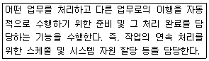
- 감시 프로그램
- 서비스 프로그램
- 작업 제어 프로그램
- 문제 프로그램
(정답률: 59%)
37. 고급 언어로 작성된 원시 프로그램을 컴퓨터가 이해할 수 있는 목적 프로그램으로 변환하는 기능을 갖는 것은?
- 운영체제(operating system)
- 컴파일러(compiler)
- 로더(loader)
- 디버거(debugger)
(정답률: 68%)
38. 로더의 기능으로 거리가 먼 것은?
- allocation(할당)
- linking(링킹)
- loading(로딩)
- compile(컴파일)
(정답률: 61%)
39. 플로우 차트를 작성하는 이유로 거리가 먼 것은?
- 프로그램을 나누어 작성할 때 대화의 수단이 된다.
- 프로그램의 수정을 용이하게 한다.
- 계산기 내부 조작 과정을 쉽게 파악할 수 있다.
- 논리적인 단계를 쉽게 이해할 수 있다.
(정답률: 49%)
40. 운영체제의 성능 평가 항목으로 거리가 먼 것은?
- 처리능력(throughput)
- 반환시간(turn-around time)
- 비용(cost)
- 사용가능도(availability)
(정답률: 90%)
4과목: 디지털공학
41. BCD 란 무엇을 의미하는가?
- 2진화 10진수
- 2진화 5진수
- 비트
- 바이트
(정답률: 74%)
42. 다음 논리식 중에서 드모르간의 정리를 나타낸 것은?
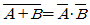
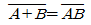
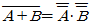
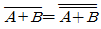
(정답률: 74%)
43. 다음 회로는?
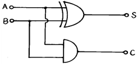
- 반가산기
- 전가산기
- 감산기
- 카운터
(정답률: 75%)
44. 다음 논리 회로 중 Fan Out 수가 가장 많은 회로는?
- CMOS
- TTL
- RTL
- DTL
(정답률: 44%)
45. JK-FF에서 J=K=1인 상태이면 clock이 "0" 상태로 갈 때 Q 출력은 어떻게 되는가?
- 변화 없음.
- 세트
- 리셋
- 반전
(정답률: 77%)
46. 5개의 플립플롭으로 구성된 2진 계수기의 모듈러스(modulus)는 몇 개인가?
- 5
- 8
- 16
- 32
(정답률: 53%)
47. 다음 논리회로에서 출력이 0이 되려면 입력 조건은?
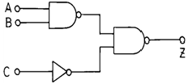
- A=1, B=1, C=1
- A=1, B=1, C=0
- A=0, B=0, C=0
- A=0, B=1, C=1
(정답률: 48%)
48. 조합논리회로의 종류가 아닌 것은?
- 플립플롭
- 인코더
- 가산기
- 멀티플렉서
(정답률: 52%)
49. 다음 기본 논리게이트와 같은 결과를 가지는 회로는?
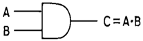
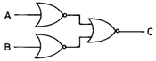
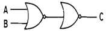
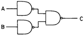
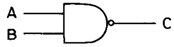
(정답률: 48%)
50. 전 감산기를 구성하는데 필요한 요소는?
- 1개의 반 감산기와 1개의 AND 게이트
- 1개의 반 감산기와 2개의 AND 게이트
- 2개의 반 감산기와 1개의 OR 게이트
- 2개의 반 감산기와 2개의 OR 게이트
(정답률: 68%)
51. 두 입력을 한데 묶어 하나의 입력으로 만들어 넣어 토글 또는 스위칭 작용을 함으로써 계수기에 많이 사용되는 플립플롭은?
- D-FF
- T-FF
- RST-FF
- JK-FF
(정답률: 66%)
52. 2진수 11001010의 1의 보수는?
- 11000101
- 00110101
- 00110110
- 01011100
(정답률: 83%)
53. 다음과 같은 Karnaugh 도표를 최소화한 것은?
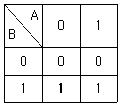
- A
- A'
- B
- B'
(정답률: 56%)
54.
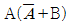
의 논리식을 간단히 하면?- 0
- 1
- A
- AB
(정답률: 57%)
55. 다음 중에서 일련의 순차적인 수를 세는 회로는?
- 인코더
- 디코더
- 계수기
- 레지스터
(정답률: 70%)
56. 문자를 나타내는 코드에서 전체 1의 비트가 짝수 개가 되거나 홀수 개가 되도록 하여 그 코드에 덧붙이는 비트 이며, 기계적인 오류를 검사하는데 사용되는 것은?
- 패리티 비트
- 3초과 코드
- 바이콰이너리 코드
- 링 카운터 코드
(정답률: 69%)
57. 불 대수
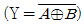
의 표현에 맞는 논리게이트는?- 버퍼
- NAND
- NOR
- X-NOR
(정답률: 53%)
58. NAND 게이트의 출력이 0일 경우의 입력 조건은?
- 모든 입력이 0일 때
- 모든 입력이 1일 때
- 1개 입력이 0일 때
- 1개 입력이 1일 때
(정답률: 65%)
59. 리플 계수기(ripple counter)의 설명 중 옳지 않은 것은?
- 회로가 간단하다.
- 동작 시간이 길다.
- 동기형 계수기이다.
- 앞단의 플립플롭 출력 Q가 다음 단 플립플롭의 클록 입력 CLK로 연결된다.
(정답률: 55%)
60. 어떤 데이터의 일시적인 보존이나 디지털 신호의 지연 작용 등의 목적으로 사용되는 플립플롭은?
- D 플립플롭
- T 플립플롭
- RS 플립플롭
- JK 플립플롭
(정답률: 72%)
1/합성저항 = 1/저항1 + 1/저항2 + ... + 1/저항n
모든 저항이 같은 값 n을 가지므로 위 식을 n으로 나누면 다음과 같습니다.
1/(n × 합성저항) = 1/n + 1/n + ... + 1/n (n개)
따라서,
1/(n × 합성저항) = n/n
합성저항 = n/ n^2 = 1/n
따라서, 병렬 연결된 저항들의 합성저항은 1/n입니다.